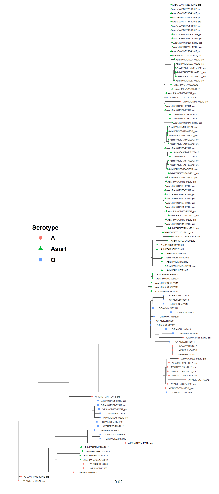
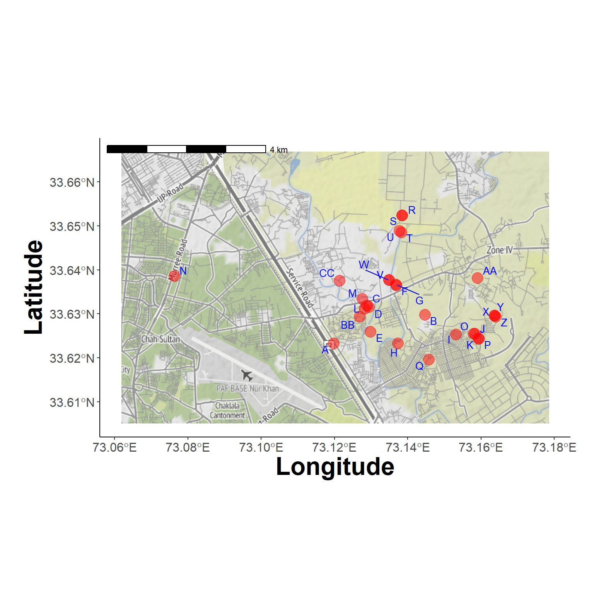
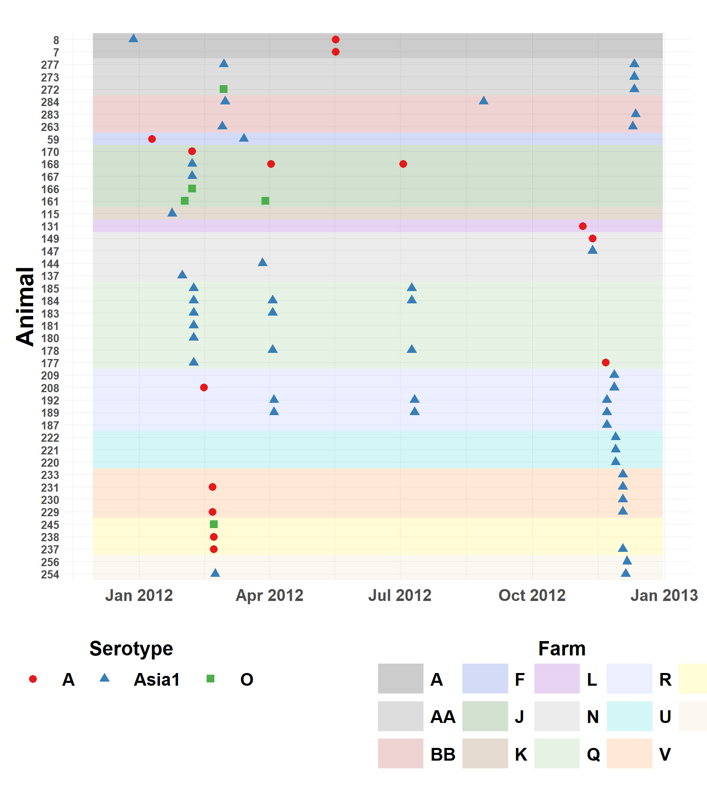

Preprocessing
Revise Nexus Files
The function nexus_label_swap() edits the Nexus file to move the descriptive text with each sample to the label position to be shown as tip labels. The revised file is saved with a _rev added to the end.
Hide code
tree_files <- list.files(here("local/paktrees"))
# swap labels
for(i in 1:length(tree_files)){
nexus_label_swap(here("local/paktrees", tree_files[i]))
}View Tree
Tree visualization to confirm nexus_label_swap() worked
Hide code
# list of revised nexus files
tree_files <- list.files(here("local/paktrees"), pattern="_rev\\.nex$")
# choose a tree
tree_tmp <- read.nexus(here("local/paktrees", tree_files[4]))Hide code
plot_tree_serotype(tree_tmp)
Geography
Extract, clean, and join geographic coordinates. The function convert_dms_to_dd() was coded to clean special characters and mistyped text from the raw file before conversion.
Hide code
farm_file <- read.csv(here("local/farm_clean2.csv"))
farm_file <- farm_file %>%
mutate(coord_x = as.numeric(sapply(coord_x, convert_dms_to_dd)),
coord_y = as.numeric(sapply(coord_y, convert_dms_to_dd)))
farms_locs <- farm_file %>%
group_by(farm_code) %>%
slice(1) %>%
ungroup() %>%
as.data.frame()Format data for mapping
The function calculate_bounding_box() helps with conversion and padding dtermination for the map.
Hide code
# use api to access background maps
map_api <- yaml::read_yaml(here("local", "secrets.yaml"))
register_stadiamaps(key = map_api$stadi_api)
# has_stadiamaps_key()
bbox <- calculate_bounding_box(farms_locs, 1)
bbox_coords <- c(left = bbox$min_lon, bottom = bbox$min_lat,
right = bbox$max_lon, top = bbox$max_lat)
background_map <- get_map(location = bbox_coords,
source = "stadia", maptype = "stamen_terrain")ℹ © Stadia Maps © Stamen Design © OpenMapTiles © OpenStreetMap contributors.Farm Locations (1)
Hide code
plot_study_area(background_map, farms_locs)
Farm Locations (2)
Try a different background
Hide code
new_background <- get_map(location = bbox_coords,
source = "stadia", maptype = "stamen_toner")
plot_study_area(new_background, farms_locs)
Subclinical Summary
Data wrangling to summarize subclinical cases. The convert_dates() function is used to standardize dates recorded using different formats.
Hide code
all_serotypes_tree <- read.nexus(here("local/paktrees", tree_files[5]))
sero_df <- as.data.frame(
all_serotypes_tree$tip.label
)
names(sero_df) <- "label"
# get animal and sample number from tip label
sero_df <- sero_df %>%
filter(str_count(label, "/") >= 4) %>%
mutate(parts = str_split(label, "/")) %>%
mutate(string = sapply(parts, function(x) if (length(x) > 3) x[4] else NA)) %>%
mutate(animal = as.integer(
if_else(str_detect(string, "-"), word(string, 1, sep = "-"), string))) %>%
mutate(sample = if_else(str_detect(string, "-"), word(string, 2, sep = "-"), NA_character_)) %>%
select(-parts)
# fix mixed date formats
farm_file <- farm_file %>%
mutate(across(starts_with("samp_date_"), ~ format(dmy(.), "%Y-%m-%d")))
# table by sample and animal
samp_date_table <- farm_file %>%
select(animal, samp_date_1, samp_date_2, samp_date_3, samp_date_4) %>%
pivot_longer(
cols = -animal,
names_to = "sample_txt",
values_to = "samp_date"
) %>%
mutate(sample = substr(sample_txt, 11, 11)) %>%
select(-sample_txt)
sero_df <- left_join(sero_df, samp_date_table, by = c("animal", "sample"))
sero_df$samp_date <- as.Date(sero_df$samp_date)
farm_file$farm_code <- with(farms_locs,
farm_code[match(
farm_file$farm_name,
farm_name)])
sero_df$farm_code <- with(farm_file,
farm_code[match(
sero_df$animal,
animal)])
sero_df <- sero_df %>%
mutate(status = ifelse(grepl("_pro$", label), "Subclinical", "Clinical"),
serotype = sub("/.*", "", label))
sub_only <- sero_df %>%
filter(status == "Subclinical")
sub_only$serotype <- sub("/.*", "", sub_only$label)save a copy
Hide code
saveRDS(sero_df, here("local/assets/sero_df.rds"))Co-Infected Animals
The below table lists samples with sequentially, or concurrent co-infection
Hide code
coinf_set <- sub_only %>%
group_by(animal) %>%
summarise(Infections = length(serotype)) %>%
filter(Infections > 1) %>%
ungroup() %>%
arrange(animal) %>%
mutate(Item = row_number()) %>%
select(Item, animal, Infections)Hide code
coinf_set %>%
gt() %>%
tab_header(
title = md("Sampled FMDV by Animal")) %>%
cols_width(starts_with("animal") ~ px(100),
starts_with("Infections") ~ px(90),
everything() ~ px(95)) %>%
tab_options(table.font.size = "small",
row_group.font.size = "small",
stub.font.size = "small",
column_labels.font.size = "medium",
heading.title.font.size = "large",
data_row.padding = px(2),
heading.title.font.weight = "bold",
column_labels.font.weight = "bold") %>%
opt_stylize(style = 6, color = 'gray') %>%
tab_caption(caption = md("Table lists subclinical animals sampled to have multiple infections. May be sequential or coinfections, and may be from the same or different FMDVs. The Infections columns lits the number sampled. Detailed records for these animals are in the next table."))Sampled FMDV by Animal |
||
| Item | animal | Infections |
|---|---|---|
Hide code
sub_only %>%
filter(animal %in% coinf_set$animal) %>%
select(-string) %>%
arrange(animal) %>%
gt() %>%
tab_header(
title = md("Subclinical with Multiple Infections")) %>%
cols_width(starts_with("label") ~ px(250),
starts_with("animal") ~ px(90),
starts_with("sample") ~ px(90),
starts_with("farm_code") ~ px(100),
starts_with("samp_date") ~ px(100),
everything() ~ px(95)) %>%
tab_options(table.font.size = "small",
row_group.font.size = "small",
stub.font.size = "small",
column_labels.font.size = "medium",
heading.title.font.size = "large",
data_row.padding = px(2),
heading.title.font.weight = "bold",
column_labels.font.weight = "bold") %>%
opt_stylize(style = 6, color = 'gray') %>%
tab_caption(caption = md("Table lists indiviual records for animals sampled to have multiple infections. Detailed version of previous table showing counts."))Subclinical with Multiple Infections |
||||||
| label | animal | sample | samp_date | farm_code | status | serotype |
|---|---|---|---|---|---|---|
Subclinical Infections by Serotype and Date
Figure showing timeline of infections by subclinical animal.
Hide code
sero_df_red <- sero_df %>%
filter(status == "Subclinical") %>%
mutate(animal_farm = paste(farm_code, animal, sep = ": "))
sero_df_red <- sero_df_red %>%
arrange(desc(farm_code), animal) %>%
mutate(animal_farm = factor(animal_farm, levels = unique(animal_farm)))
background <- sero_df_red %>%
group_by(farm_code) %>%
summarize(ymin = min(which(levels(animal_farm) %in% animal_farm)) - 0.5,
ymax = max(which(levels(animal_farm) %in% animal_farm)) + 0.5) %>%
ungroup()
palette_colors <- pals::watlington(length(unique(sero_df_red$farm_code)))Hide code
ggplot() +
geom_rect(data = background, aes(xmin = as.Date("2011-11-30"),
xmax = as.Date("2012-12-31"),
ymin = ymin, ymax = ymax,
fill = farm_code), col="transparent", alpha = 0.2) +
geom_point(data = sero_df_red, aes(x = samp_date, y = animal_farm,
color = serotype, shape = serotype), size = 3) +
labs(title = " ",
x = " ",
y = "Animal",
color = "Serotype",
shape = "Serotype",
fill = "Farm") +
theme_minimal() +
guides(color = guide_legend(order = 1, nrow = 1, title.position = "top", title.hjust = 0.5),
shape = guide_legend(order = 1, nrow = 1, title.position = "top", title.hjust = 0.5),
fill = guide_legend(order = 2, nrow = 3, title.position = "top", title.hjust = 0.5)) +
scale_y_discrete(labels = function(x) gsub(".*: ", "", x)) +
scale_color_brewer(palette = "Set1") +
scale_fill_manual(values = palette_colors) +
theme(plot.margin = unit(c(0.5,0.5,0.5,0.5),"cm"),
panel.grid.major = element_line(linewidth = 0.15),
panel.grid.minor = element_line(linewidth = 0.05),
legend.direction = "horizontal",
legend.position="bottom",
strip.text = element_text(size=16, face="bold"),
strip.background = element_blank(),
legend.key.size = unit(2,"line"),
legend.key.width = unit(3,"line"),
legend.text = element_text(size=16, face="bold"),
legend.title = element_text(size=18, face="bold"),
axis.title.x = element_text(size=18, face="bold"),
axis.title.y = element_text(size=22, face="bold"),
axis.text.x = element_text(face="bold", size=15, vjust=0.5,
hjust=0.5, angle=0),
axis.text.y = element_text(size=10, face="bold"),
plot.title = element_text(size=10, face="bold"),
legend.spacing = unit(4, "cm"),
legend.margin = margin(t = 2, b = 1))
Tree Dates
The (ugly) code below used to create date files for serotype-specific time calibrated trees in Beast. Dates for clinical samples used as outgroups are queried at GenBank using the custom functions get_isolate_collection_date() and get_accession_date_meta() that search the samples metadata for date related information. The rentrez package is used for metadata retrieval.
Query NCBI
Hide code
iso_names <- c("A/PAK/KCH/7/2009", "A/PAK/ICT/1/2008", "A/PAK/ICT/276/2012",
"A/PAK/SGD/12/2012", "A/PAK/PSH/34/2012", "A/PAK/FSD/4/2012")
isolate_dates <- get_isolate_collection_date(iso_names) Loading required package: rentrezHide code
isolate_dates %>% # only years available... The middle June 1 will be used for month and day
gt()| IsolateName | CollectionDate |
|---|---|
Hide code
acc_numbers <- c("KF112900", "JF721440", "MT981310", "MF140445", "JN006719",
"KM268898", "JX170756", "MT944981", "KR149704")
access_meta <- get_accession_date_meta(acc_numbers) # only year for some...
access_meta %>%
gt()| AccessionNumber | CollectionDate | IsolateName | StrainName |
|---|---|---|---|
Creating dates table for Beast.
Hide code
tree_tmp <- read.nexus(here("local/paktrees", tree_files[6]))
tree_tips <- as.data.frame(
cbind(
label = tree_tmp$tip.label
)
)
dates_file <- sero_df %>%
select(label, samp_date)
dates_file <- left_join(tree_tips, dates_file, by="label")
dates_file <- dates_file %>%
mutate(samp_date = case_when(
label == "KF112900" ~ as_date("2009-01-14", format = "%Y-%m-%d"),
label == "JF721440" ~ as_date("2009-06-01", format = "%Y-%m-%d"),
label == "MT981310" ~ as_date("2012-06-01", format = "%Y-%m-%d"),
label == "A/PAK/KCH/7/2009" ~ as_date("2009-06-01", format = "%Y-%m-%d"),
label == "A/PAK/ICT/1/2008" ~ as_date("2008-06-01", format = "%Y-%m-%d"),
label == "A/PAK/ICT/276/2012" ~ as_date("2012-06-01", format = "%Y-%m-%d"),
label == "A/PAK/SGD/12/2012" ~ as_date("2012-06-01", format = "%Y-%m-%d"),
label == "A/PAK/PSH/34/2012" ~ as_date("2012-06-01", format = "%Y-%m-%d"),
label == "A/PAK/FSD/4/2012" ~ as_date("2012-06-01", format = "%Y-%m-%d"),
TRUE ~ samp_date
))
write.table(dates_file, file = here("local/beast/a_1/fmd_a_dates.tsv"),
sep = "\t", row.names = FALSE, col.names = FALSE, quote = FALSE)Creating dates table for Beast.
Hide code
tree_tmp <- read.nexus(here("local/paktrees", tree_files[7]))
tree_tips <- as.data.frame(
cbind(
label = tree_tmp$tip.label
)
)
tree_tips <- tree_tips %>%
mutate(parts = str_split(label, "/")) %>%
mutate(string = sapply(parts, function(x) if (length(x) > 3) x[4] else NA)) %>%
mutate(animal = as.integer(
if_else(str_detect(string, "-"), word(string, 1, sep = "-"), string))) %>%
mutate(sample = if_else(str_detect(string, "-"), word(string, 2, sep = "-"), NA_character_)) %>%
select(-parts)
dates_lu <- sero_df %>%
mutate(date = samp_date) %>%
select(label, date)
tree_tips <- left_join(tree_tips, dates_lu, by = c("label"))
is_year <- function(x) {
sapply(x, function(y) {
if (grepl("^[0-9]{4}$", y)) {
year <- as.numeric(y)
return(year >= 1950 && year <= 2015)
}
return(FALSE)
})
}
tree_tips <- tree_tips %>%
mutate(
label_year = substr(label, nchar(label)-3, nchar(label)),
is_year = is_year(label_year),
date = ifelse(
is_year == TRUE & is.na(date),
as.Date(paste(label_year, "06", "01", sep="-")),
date
),
date = as.Date(date, origin="1970-01-01")
) %>%
select(-c(string, animal, sample, label_year, is_year))
tree_tips <- tree_tips %>%
mutate(date = case_when(
label == "MF140445" ~ as_date("2017-03-01", format = "%Y-%m-%d"),
label == "JN006719" ~ as_date("2008-06-01", format = "%Y-%m-%d"),
label == "KM268898" ~ as_date("2013-02-09", format = "%Y-%m-%d"),
TRUE ~ date
))
write.table(tree_tips, file = here("local/beast/asia1_1/fmd_asia1_dates.tsv"),
sep = "\t", row.names = FALSE, col.names = FALSE, quote = FALSE)Creating dates table for Beast.
Hide code
tree_tmp <- read.nexus(here("local/paktrees", tree_files[9]))
tree_tips <- as.data.frame(
cbind(
label = tree_tmp$tip.label
)
)
tree_tips <- tree_tips %>%
mutate(parts = str_split(label, "/")) %>%
mutate(string = sapply(parts, function(x) if (length(x) > 3) x[4] else NA)) %>%
mutate(animal = as.integer(
if_else(str_detect(string, "-"), word(string, 1, sep = "-"), string))) %>%
mutate(sample = if_else(str_detect(string, "-"), word(string, 2, sep = "-"), NA_character_)) %>%
select(-parts)
tree_tips <- left_join(tree_tips, dates_lu, by = c("label"))
tree_tips <- tree_tips %>%
mutate(
label_year = substr(label, nchar(label)-3, nchar(label)),
is_year = is_year(label_year),
date = ifelse(
is_year == TRUE & is.na(date),
as.Date(paste(label_year, "06", "01", sep="-")),
date
),
date = as.Date(date, origin="1970-01-01")
) %>%
select(-c(string, animal, sample, label_year, is_year))
tree_tips <- tree_tips %>%
mutate(date = case_when(
label == "JX170756" ~ as_date("2011-02-01", format = "%Y-%m-%d"),
label == "MT944981" ~ as_date("2016-02-14", format = "%Y-%m-%d"),
label == "KR149704" ~ as_date("2010-01-01", format = "%Y-%m-%d"),
TRUE ~ date
))
write.table(tree_tips, file = here("local/beast/o_1/fmd_0_dates.tsv"),
sep = "\t", row.names = FALSE, col.names = FALSE, quote = FALSE)